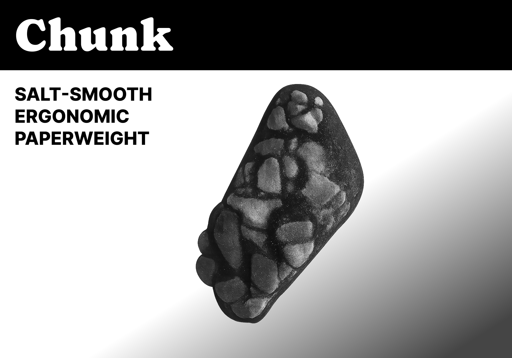
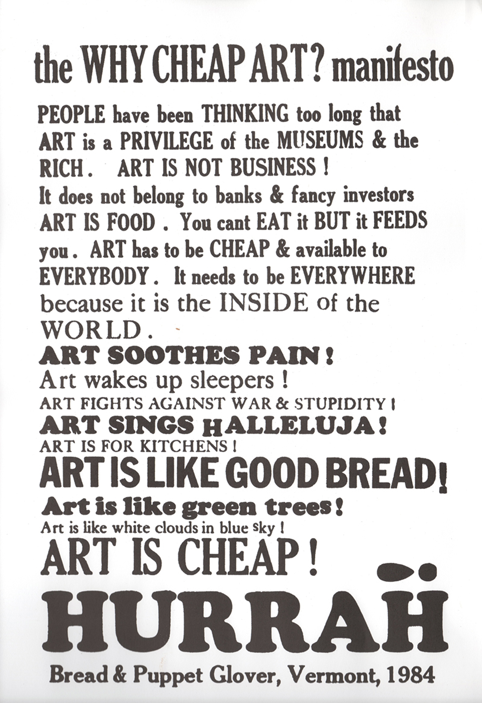
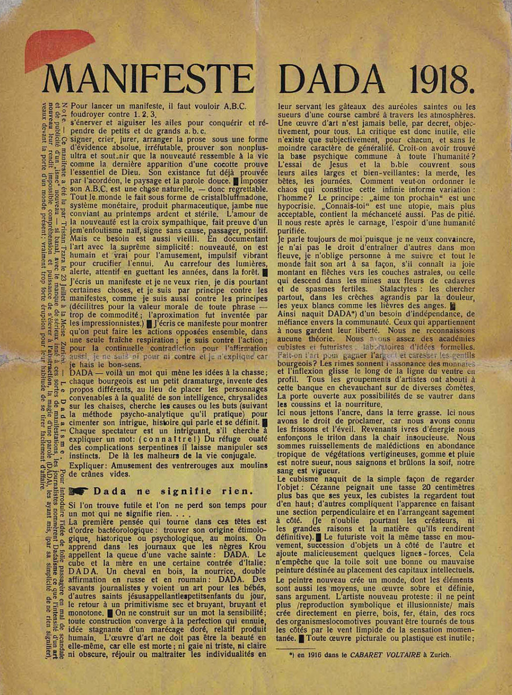
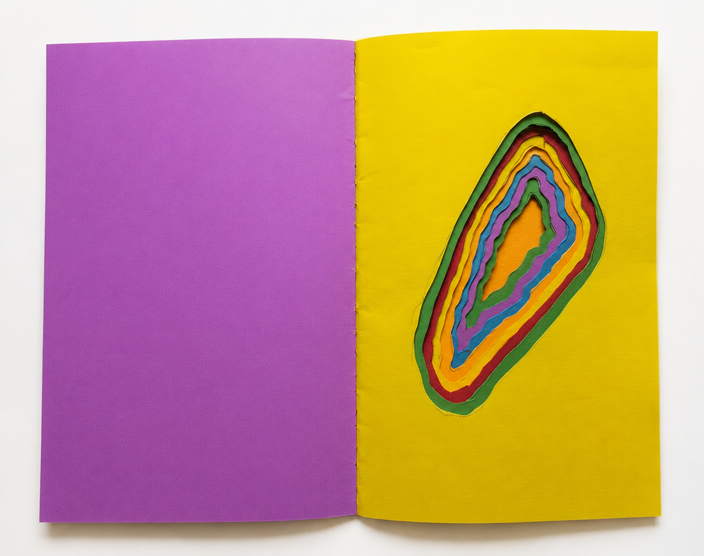
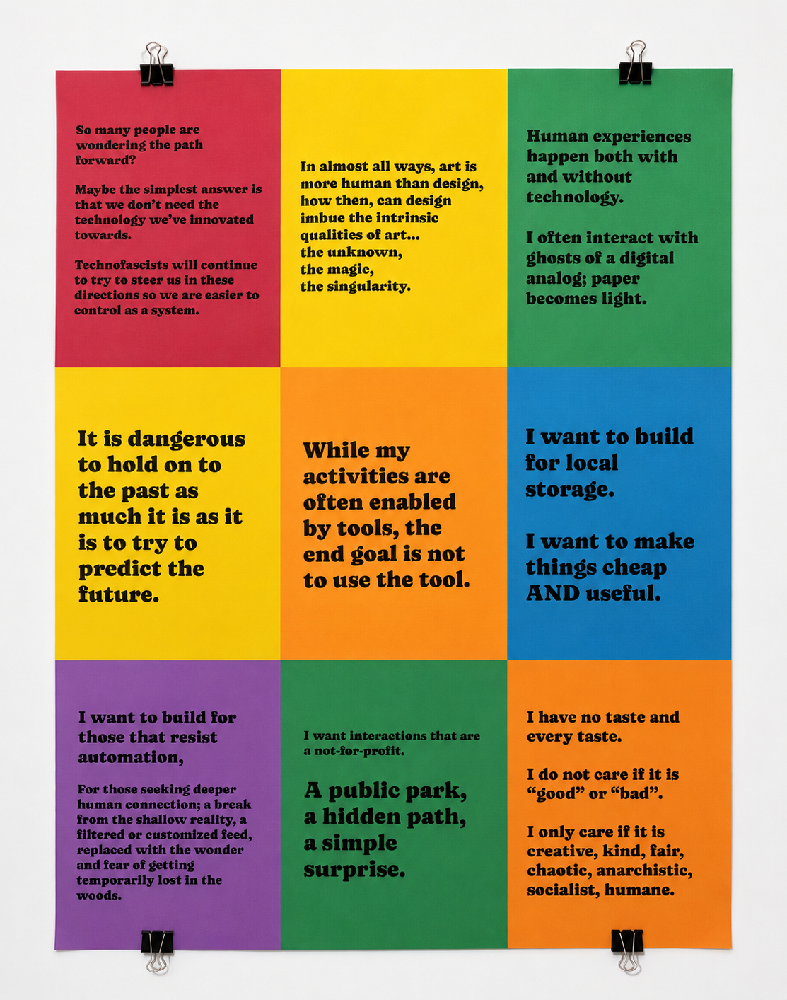
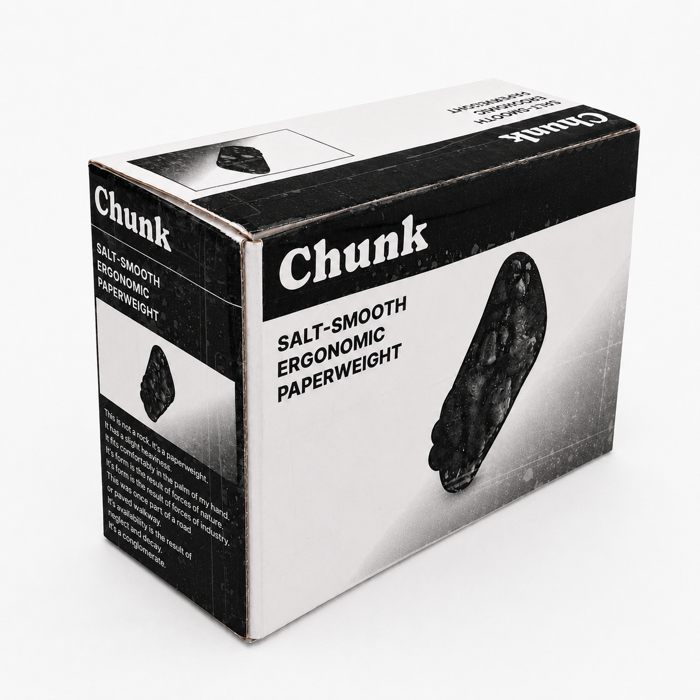
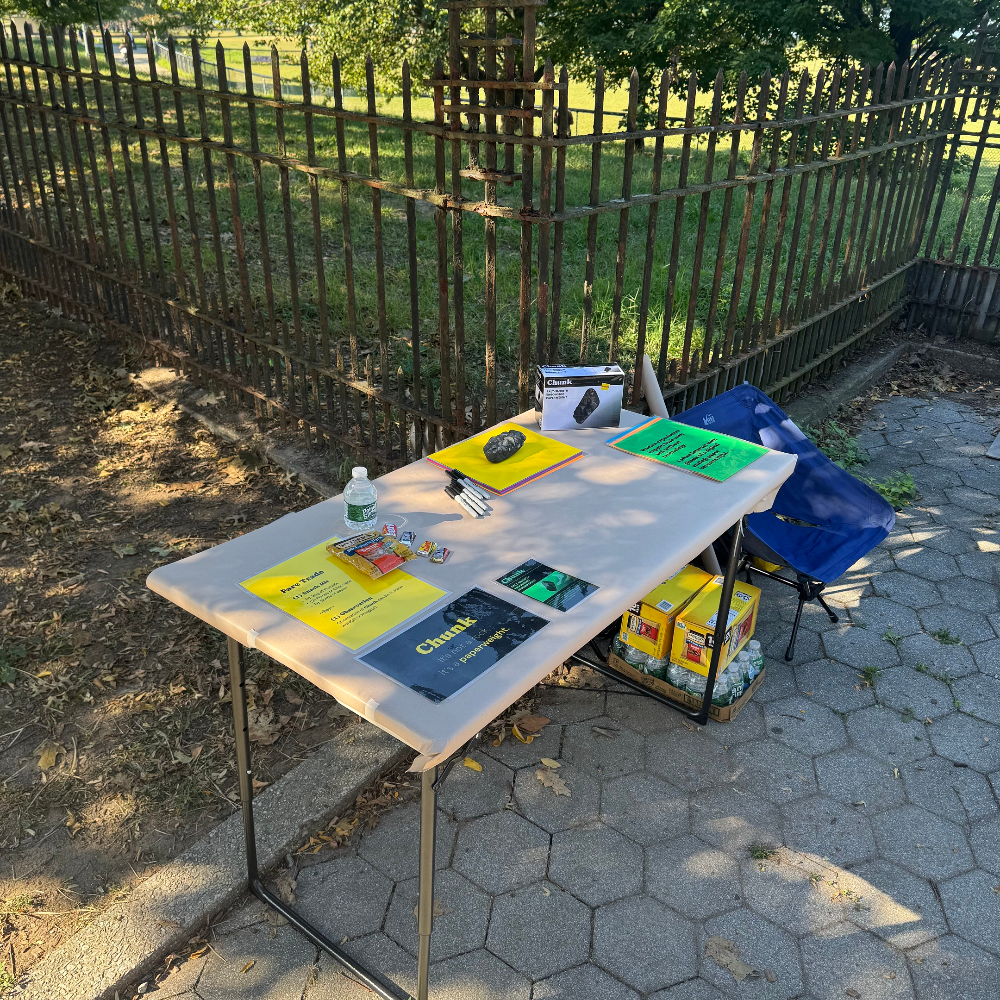
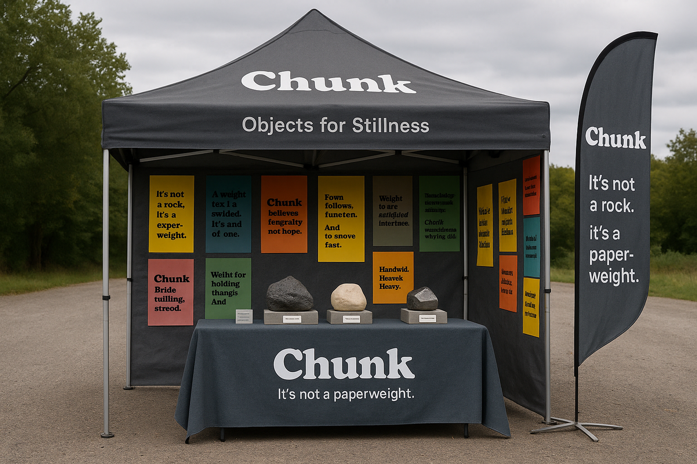

A Dada-influenced manifesto about art, technology, and public space — iterated across four formats until only two statements survived.

The Brief
After researching various art and design manifestos, I landed on Dada and the Why Cheap Art? manifesto — evoking a sense of nonsensical craft. The work blurs the line between saying something and solving something.
"They use the same tools — words, pictures, colors. The difference, as you'll be seeing, as you'll be showing me, is how." — The Cheese Monkeys


The typography and aesthetic of the Bread & Puppet poster helped to define how I would approach the making: cheap & visually rich; the attitude towards the work would be determined by the "Anti-Manifesto" Dadaists: contradictory, absurdist, non-sensical.
Exploration 01
The first iteration. A hand-assembled book — pre-Chunk burn mark included. Format raised the first question: does a manifesto need to be read, or just experienced?

Exploration 02
Nine color panels — cheap, visually rich, clipped to the wall. Each panel carries one statement. The format introduced the idea of manifesto as installation.

Exploration 03
The Chunk paperweight. Formal letters on grey stock. An invitation — taken straight from the dictionary — to go somewhere, do something. The manifesto becomes a thing you can hold.

Exploration 04
A folding table, snacks, flyers, and the Chunk box in a park. Relying on foot traffic alone didn't get as much engagement as expected. The flyer also proved ineffective.

Outcomes
I removed more content than I started with. Of the original nine panels, two statements felt universal enough to share when asked for meaning behind the work.
Cycling through formats arrived at something with real audience participation potential — and a richer foundation for future work using AI-assisted image and content generation.

AI-generated: Chunk market booth — "Objects for Stillness." Some hallucinations as Dadaist offerings: "Fown follows, funeten."